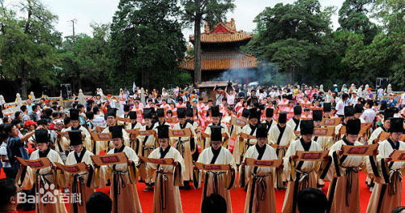

- 民族简介
- 文化习俗
- 历史发展
- 旅游介绍
汉族
汉族 汉族是中国的主体民族，是上古时期黄帝和炎帝部落的后裔，炎黄子孙。 “汉”原指天河、宇宙银河，《诗经》云：“维天有汉，监亦有光。”汉族旧称汉人是因中国的汉王朝而得名，汉朝以前称“华夏”或“诸夏”。 无论是在政治、军事、哲学、文学、史学、艺术等诸多方面，还是在自然科学领域中，汉族都创造了许多辉煌的业绩。
汉族自古对各种宗教信仰采取兼容并蓄的态度。天命崇拜和祖先崇拜是汉族宗教的主要传统观念。几千年来，提倡以仁为中心，重视伦理教育，由孔子、孟子思想体系形成的儒家学说对汉族产生着深刻的影响。 汉族历来以勤劳、富于创造精神著称。汉族历史上的经济是以农业为主，兼营家庭副业，是一种典型的男耕女织的自然经济。汉族的农业生产在历史上素来发达，尤其以水利灌溉和精耕细作著称于世，汉族的手工业也有相当高的发展水平。
而随着中国历史的变迁，以及外族入侵和躲避战乱等因素，汉族也发生了大规模迁移，一直在从中原地区向南迁移。客家人继承了当时中原汉人的文化传统，比如说古语，风俗习惯也有历史痕迹。 汉族还是一个历史从未中断过的、历史悠久的民族，也是世界上人口最多的民族。截止2009年，汉族人口约为13亿，约占世界总人口的19%，分布于世界各地。在中国大陆，汉族占总人口的92%；在台湾，汉族占总人口的98%；在香港和澳门，汉族分别占总人口的95%和97%。 [1] 除中国两岸三地外，汉族在东南亚、北美洲和西欧也有较多分布。">
信仰
宗教对许多民族有重大影响，在汉族中没有产生全民族必须信仰的完全意义 上的宗教。汉族自古对各种宗教采取兼容并蓄的态度。自汉代以来及至近代多种外来的宗教，如佛教、祆教、摩尼教、天主教、基督教等，都有一部分汉人信奉。无论是何种外来的宗教，其教义与汉族固有的天命观与祖宗崇拜不相矛盾，或改造其某些教义与汉族固有宗教观念相适应，才有可能得到流传。道教虽然是汉族历史上形成的宗教，也不是全民族每个成员都信奉。在整个中国历史上，尤其是汉族的历史上，除少数皇帝特别崇信某种宗教因而使之获得某些政治特权之外，从没有出现过“国教” 。
中国传统上为以祖先信仰为主，并且具有儒、释、道三教合一的宗教信仰传统和特点，同时存在其它多种宗教。中华人民共和国成立后，官方奉行无神论，其后曾经发动过文化大革命对各种宗教造成破坏，直到改革开放后才开始转变。 汉族宗教文化，有“儒道释”三教之说；一般的中国人，在祖先崇拜的基础上，都受到儒、道、释三教思想的影响，称之为中国民间信仰。
建筑
汉族由于分布地区广大，其传统住房因地区不同而有不同的样式。居住在华北平原的汉族，其传统住住房多为砖木结构的平房，院落多为四合院式，以北京四合院为代表；居住在东北的汉族，其传统住房与华北基本相似，区别在墙壁和屋顶，那里的住房一般都很厚实，主要是为了保暖；居住在陕北的汉族，则根据黄土高原土层厚实、地下水位低的特点挖窑洞为住房，窑洞不仅冬暖夏凉，而且不占耕地面积；居住在南方的汉族，其传统住房以木建房为主，讲究飞檐重阁和律卯结构。由于南方各地习俗和自然条件不同，在住房建筑布局上也有差异。如丘陵山地的楼房依山而建，江浙水乡则注重前街后河，福建的土楼庞大而美观，苏州的楼阁小巧而秀丽。
无论南方还是北方的汉族，其传统民居的共同特点都是坐北朝南，注重室内采光；以木梁承重，以砖、石、土砌护墙；以堂屋为中心，以雕梁画栋和装饰屋顶、檐口见长。
服饰
在服饰上，汉族有自己悠久华美的服饰，即汉服。各个朝代，对服饰的颜 色，各有崇尚，一般是夏黑、商白、周赤、秦黑、汉赤、唐服色黄，旗帜赤，到了明代，取法周、汉、唐、宋，定为赤色为宜。汉服是世界上历史最古老的民族服饰之一，从传说中的黄帝一直延续到甲申之难（1644年）。1644年清军入关后，建立了以满族为核心的高度集权政府。统治者下令全国剃发易服，引起全国性的愤怒、不满及武装抵抗，随后清王朝进行武力血腥镇压与屠杀，汉服也因此逐渐消亡。1683年，清军入台湾灭郑成功余部，从此汉服从汉族的日常生活中彻底消亡。在经历满清两百多年的统治后，今日的汉族逐渐忘记了自己曾经拥有的华美衣裳，成了世界上惟一没有自己民族服装的古老民族。今天人们看到的“唐装”和旗袍、长衫马褂都不是汉族的民族服饰，而是满族的民族服饰或是其改良服饰 。
饮食
汉族主要从事农业，主食以小麦、玉米、稻米等为主，辅以蔬菜、豆制品和鸡、鱼、猪、牛、羊肉等副食，茶和酒是传统饮料。以大米为主食的，习惯将大米做成米饭、粥或米粉、米糕、汤圆、粽子、年糕等各种不同的食品；以小麦为主食的，习惯将麦面做成馒头、面条、花卷、包子、饺子、馄饨、油条、春卷、炸糕、煎饼等。讲究并善于烹任，是汉族的一大饮食特点。不同地区的汉族人民以炒、烧、煎煮、蒸、烤和凉拌等烹饪方式，经过长期的实践，形成了不同的地方风味。汉族的粤、闽、徽、鲁、川、湘、浙、苏等八大菜系，闻名于海内外。
历史
汉族先民 据先秦文献记载的传说与夏、商、周立都范围，汉族的远古先民大体中原地区为活 动范围；主要分布在这一地区的仰韶文化和龙山文化这两个类型的新石器文化，一般认为即汉族远古先民的文化遗存。
远古传说，还描述了汉族先民曾经历漫长的原始公社制时代。在黄帝以前，经过“知母不知父”的母系氏族部落的阶段；关于黄帝的传说，则标志着由母系氏族部落转化为父系氏族部落，并已进入部落联盟阶段。传说在黄帝之后相继以禅让方式为大部落联盟首领的尧、舜、禹，虽都被认为是黄帝的子孙，然而历史传说又表明，汉族远古先民，实包括来自羌、夷、苗、黎等氏族部落集团的人。因而，又有虞舜出自东夷，夏禹出自羌、戎的记述；还有一些传说中的人物，按不同记述，可解释成亦羌、亦夷、亦苗黎。这种历史传说的矛盾现象，反映了不同来源的氏族部落集团逐步融合为同一个族体，创造共同祖先的历史过程。 [13]
公元前21世纪，中原地区的原始公 社制时代走到了历史的尽头，阶级社会已经出现在黄河中、下游平原的土地上。从公元前21世纪以后，相继出现了夏 、商 、西周 几个王朝。夏王族为大禹之后。商王的祖先本是东夷，周王自称其先民为夏人的一支，杂居于戎、狄之间，与羌人关系密切。这些虽都自认黄帝为其祖先，而实际却是来自不同部落集团的人们，首先在黄河及其支流渭、汾、伊、洛下至河济之间以及淮河支流汝、颍上游；继而发展至淮河、泗水、长江、汉水的广大地区。经过漫长历史年代的接近、交往、斗争和融合，而形成为共同族体。西周时，已出现华、夏单称或华夏连称的族名，以与蛮、夷、戎、狄相区别。但是，这时华夷之辨尚不甚严。 春秋时，华夷贵贱尊卑的观念已很强烈，当时区分华夏与蛮夷的标准，族类与文化都被重视，文化尤为首要因素。华夷因礼俗、服饰等因素而往往可以互相易位。 至战国 ，七雄合纵、连横、兼并、争战，但族体相同，形成诸夏统一趋势； 进至中原的戎、狄、夷、蛮也逐渐与华夏融化，于是华夏成为稳定的族体，分布区域也已达东北辽河中下游，西北洮河流域，西南巴蜀黔中，东南湖湘吴越等广大地区 。
秦始皇兵马俑
世界第八大奇迹。1974年，秦始皇陵兵马俑坑的发现震惊世界。这一建在公元前3世纪的地下雕塑群以恢弘磅礴的气势，威武严整的军阵，形态逼真的陶俑向人们展示出古代东方文化的灿烂辉煌，无论建造年代、建筑规模与艺术效果无不堪与“世界七大奇迹”媲美。
大雁塔
大雁塔位于和平门外4公里的慈恩寺内，相传唐代永徽三年。赴印度取经的玄奘法师。奏请在寺内建塔，用于存放他自印度带回来的经籍。这座塔初名为经塔。后世人称它为大雁塔，此塔巍峨挺拔，引起世人的赞叹。这座有着一千三百多年历史的大雁塔，成为古城西安独具风格的标志。
大唐芙蓉园
大唐芙蓉园（TangParadise）位于古都西安大雁塔之侧，是中国第一个全方位展示盛唐风貌的大型皇家园林式文化主题公园。早在历史上，芙蓉园就是久负盛名的皇家御苑。今天的大唐芙蓉园建于原唐代芙蓉园遗址上，以“走进历史、感受人文、体验生活”为背景，展示了大唐盛世的灿烂文明。